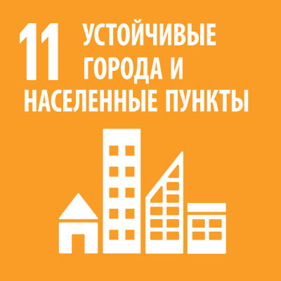

О цели
Цель устойчивого развития (ЦУР) №11 Республики Беларусь — «Устойчивые города и населенные пункты». Она направлена на обеспечение безопасности, устойчивости, инклюзивности и экологичности городов и поселений страны.
📌 1. Суть ЦУР 11: Устойчивые города и населенные пункты
Эта цель связана с развитием городов таким образом, чтобы они:
- Обеспечивали безопасность и комфорт жизни людей;
- Были экологически чистыми и энергоэффективными;
- Имели устойчивую транспортную инфраструктуру;
- Гарантировали доступ к доступному жилью, качественным услугам и рабочим местам;
- Сохраняли культурное и природное наследие.
Для Беларуси эта цель особенно актуальна, так как в стране высокий уровень урбанизации (более 78% населения живёт в городах).
Проблемы
Несмотря на активные меры государства, в Республике Беларусь существуют ряд проблем, связанных с устойчивостью городов:🏘 1. Проблема доступного и качественного жилья
- Высокие цены на жилье и ограниченные возможности его покупки молодыми семьями.
- Дефицит социального жилья.
- Износ жилого фонда в старых районах (особенно панельных домов 1960–1980-х годов).
🚗 2. Проблемы транспорта и мобильности
- Перегруженность городского транспорта в Минске и других крупных городах.
- Рост количества личных автомобилей → пробки, нехватка парковочных мест, загрязнение воздуха.
- Недостаточное развитие велосипедной инфраструктуры.
🌿 3. Экологические проблемы
- Загрязнение воздуха от автомобильного транспорта и промышленных предприятий.
- Нехватка зеленых зон в быстрорастущих районах городов.
- Неэффективная система утилизации отходов, недостаточное развитие раздельного сбора мусора.
🏗 4. Устаревшая городская инфраструктура
- Износ инженерных сетей (водопровод, канализация, отопление).
- Дефицит современных общественных пространств.
- Проблемы с энергоэффективностью зданий.
📉 5. Социальное неравенство в городах
- Разрыв в уровне жизни между центром и окраинами городов.
- Недостаточная доступность инфраструктуры для людей с ограниченными возможностями.
- Проблемы безопасности в отдельных районах.
🏛 6. Сохранение исторического и культурного наследия
- Разрушение или некачественная реставрация исторических зданий.
- Строительство новых зданий без учета архитектурного облика города.
Решения
Беларусь активно работает над улучшением городской среды. Основные направления решений:🏡 1. Доступное и комфортное жильё
- Государственные программы субсидирования покупки жилья для молодежи и многодетных семей.
- Реновация старого жилого фонда.
- Развитие малоэтажного строительства.
🚉 2. Развитие транспорта и городской мобильности
- Развитие общественного транспорта (метро в Минске, электробусы, трамвайные линии).
- Создание дополнительных велосипедных дорожек.
- Внедрение «умных» транспортных систем для оптимизации трафика.
🍃 3. Экология и зеленая инфраструктура
- Развитие парков и скверов в городах.
- Ужесточение норм по выбросам для автомобилей и предприятий.
- Введение раздельного сбора мусора и переработки отходов.
🔧 4. Реконструкция городской инфраструктуры
- Обновление инженерных коммуникаций.
- Внедрение энергоэффективных технологий в строительстве.
- Создание современных общественных пространств (парки, зоны отдыха, велодорожки).
🏛 5. Сохранение культурного наследия
- Развитие программ по охране и реставрации памятников архитектуры.
- Контроль за застройкой в исторических центрах городов.
- Популяризация культурного наследия через туризм.
🤝 6. Развитие инклюзивных городов
- Улучшение доступности инфраструктуры для маломобильных групп населения.
- Развитие безбарьерной среды (пандусы, лифты, удобные переходы).
- Борьба с социальным неравенством (программы помощи малообеспеченным слоям населения).
Примеры и инициативы в Беларуси
- Минск: проект "Зелёный город" – направлен на развитие экологически чистого транспорта и улучшение зеленых зон.
- Гродно: программа "Умный город" – внедрение цифровых технологий в управление городским хозяйством.
- Проект "Чистый воздух" – меры по снижению загрязнения воздуха в городах.
- Развитие электробусного транспорта – замена дизельных автобусов на электробусы.